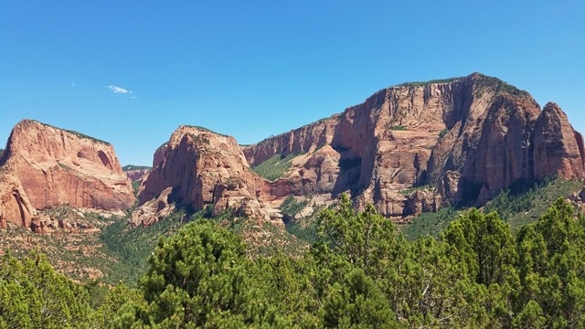

Machu Picchu, Peru
Machu Picchu is an impressive archaeological site in Peru. It is a complex of palaces, plazas, temples, and homes built by the Inca Empire at the peak of its power. Scholars are still trying to unravel its mysteries. The site's landscape engineering skills are impressive, and it's a must-see for any visitor to Peru. The challenge is to preserve the site while making it accessible to visitors.
Read More
Zion National Park, USA
Zion Canyon in Zion National Park is popular for hiking with varying degrees of difficulty. The park shuttle is necessary to access most Zion Canyon hikes, but shuttle schedules should be checked beforehand. Arriving early to find parking is important during peak season. Visitors should prepare properly for hiking in the harsh environment, as rescues are common. Following Leave No Trace principles can make a difference for the future of Zion.
Read More

Cinque Terre, Italy
Set amid some of the most dramatic coastal scenery on the planet, these five ingeniously constructed fishing villages can bolster the most jaded of spirits. A Unesco World Heritage Site since 1997, Cinque Terre isn't the undiscovered Eden it once was but, frankly, who cares? Sinuous paths traverse seemingly impregnable cliff sides, while a 19th-century railway line cut through a series of coastal tunnels ferries the footsore from village to village. Thankfully cars were banned over a decade ago
Read More